¿Qué pasa cuando un software que utilizas para un proyecto es muy bueno pero la funcionalidad que necesitas solo se encuentra en la versión "Enterprise"?
¿Te suena familar?
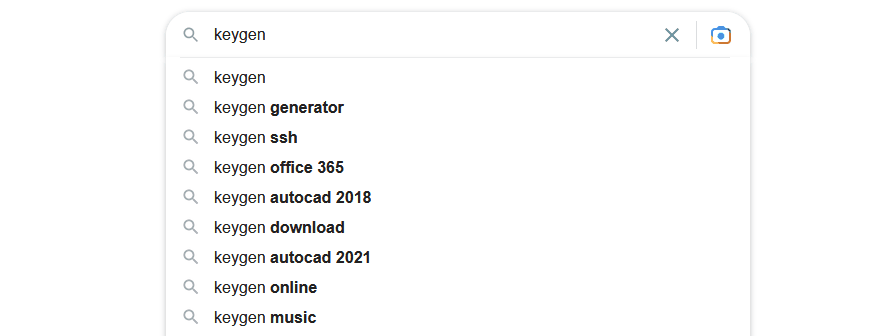Esto solo pasa en otro país
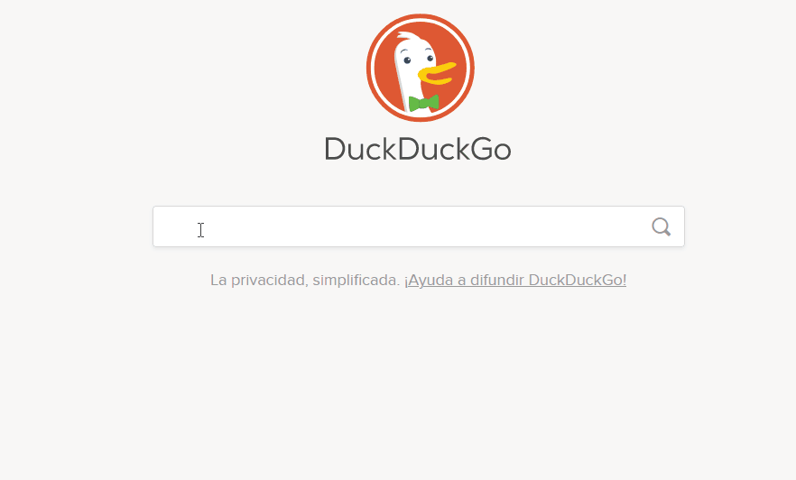Tal vez esta historia te suena familiar
Te encargan hacer el modelo y diseño de una base de datos
De inmediato descartas hacerlo en un procesador de textos
Tampoco quieres sufrir haciendo dibujitos
Decides usar una herramienta diseñada para ese propósito
MySqlWorkbench
Maneja los conceptos de base de datos realacionales: Tablas, Relaciones, Indices, Tipos de Datos
Iniciamos con modelado de la base de datos
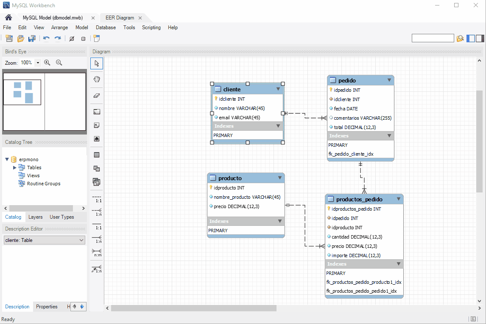El diagrama está excelente
Pero te piden que generes la documentación y el diccionario de datos
Buscas en las opciones del programa y no encuentras esa opción
Recurres al arma secreta de todos los devs (si, google)
¡¡Sorpresa!!
esa funcionalidad solo está en la versión ENTERPRISE
La primer alternativa:
Creas tu formato en una hoja de cálculo con las clasicas columnas
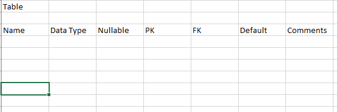Comenzado la documentación....
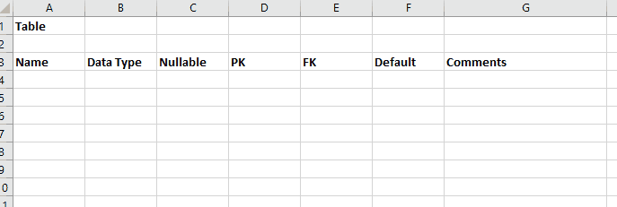Pero tu proyecto tiene 40 tablas
En ese momento decides buscar una alternativa para generar la documentación
¡Y la respuesta llega del cielo!
Inicia la solución del problema y el aprendizaje
"Workbench model data, such as diagrams, schemas, and tables, is stored in a hierarchy of objects that can be accessed by any plugin"
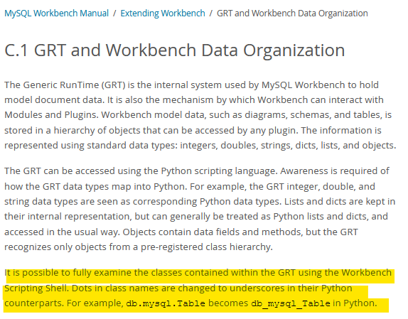Pero para MysSQLWorkbench 5.6 se usaba.....
Primer aprendizaje: LUA SCRIPT
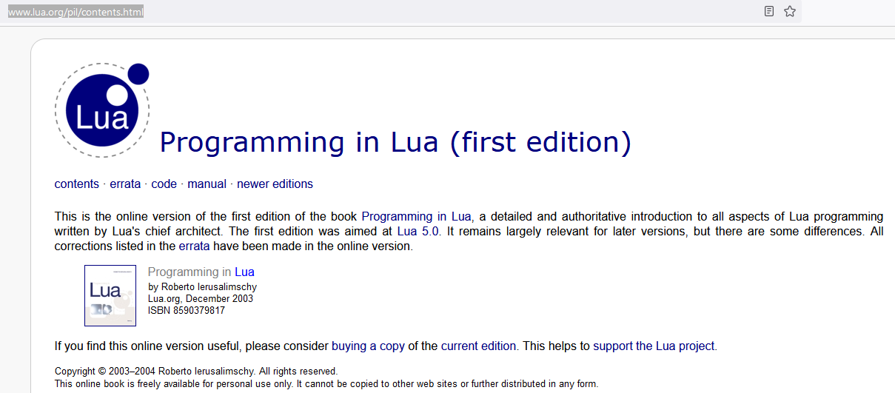No es mucho... pero es un trabajo honesto
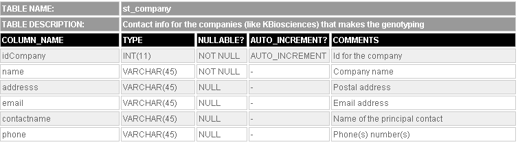Aprendizaje de LUA
- Poner comentarios
- Iterar sobre una colección de objetos
- Mostrar mensajes
- Concatenar Strings
- Manejo de arreglos
- Flujos condicionales
Segundo aprendizaje: Colaboración
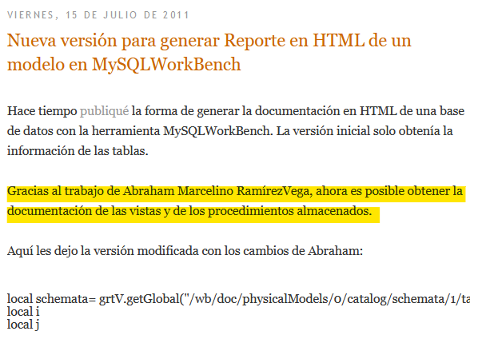Tercer aprendizaje: Compartir donde se haga más fácil
Puedes utilizar un Blog
Después de pelear con la sintáxis en HTML para el blog: Dropbox
Cuarto aprendizaje: Actualizar y compartir en otro idioma
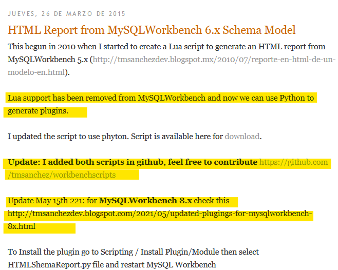https://dataedo.com/kb/tools/mysql-workbench/documentation-generator-plugins
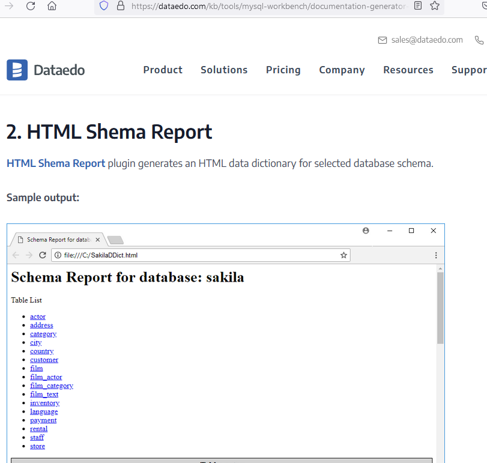
https://www.chunho-ling.com
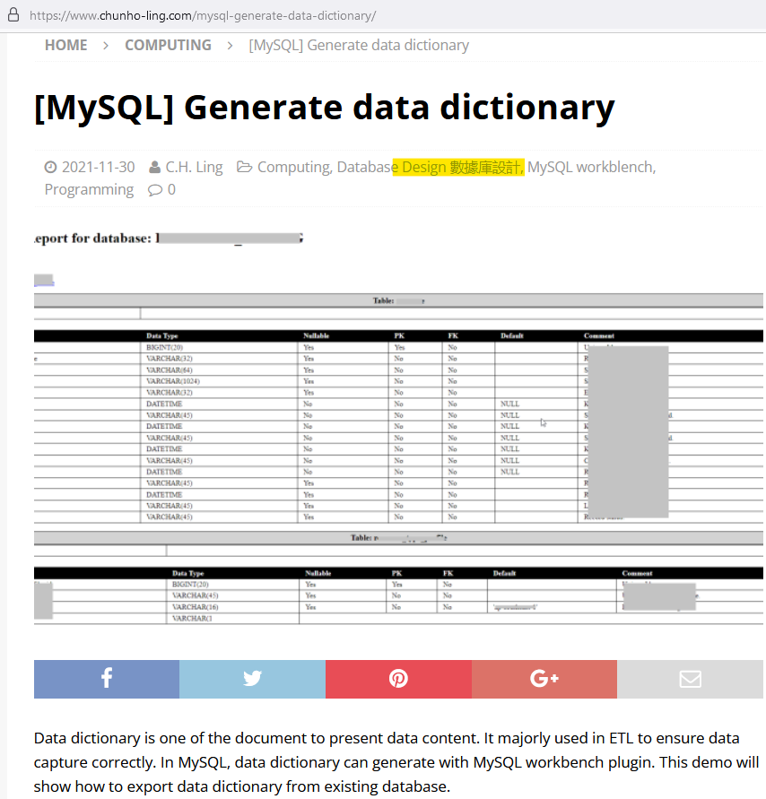Quinto aprendizaje: Retroalimentación
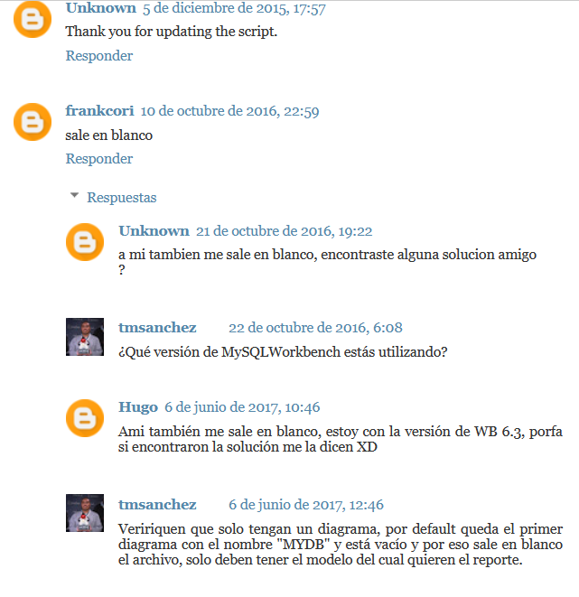Sexto aprendizaje: Python
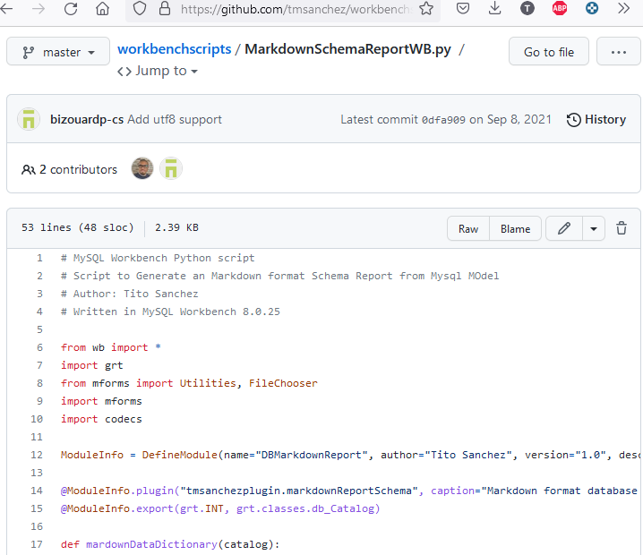Sexto aprendizaje: Comunidad
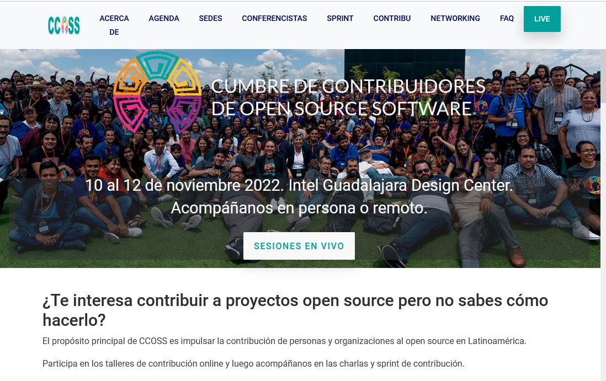Referencias
- Appendix C Extending Workbench
https://dev.mysql.com/doc/workbench/en/wb-extending.html - El blog de TMSANCHEZ
http://tmsanchezdev.blogspot.com - Workbench
Scripts
https://github.com/tmsanchez/workbenchscripts - Export your Data
Dictionary to HTML with MySQL Workbench
https://www.youtube.com/watch?v=yYSmWYUgfgk - 4
database documentation / data dictionary generator plugins for MySQL Workbench
https://dataedo.com/kb/tools/mysql-workbench/documentation-generator-plugins - MySQL Generate data
dictionary
https://www.chunho-ling.com/mysql-generate-data-dictionary - Programming in Lua
(first edition)
http://www.lua.org/pil/contents.html
Presentación
- Resuelve esa pequeña necesidad y compártela como open source
https://tmsanchez.github.io/ccoss2022